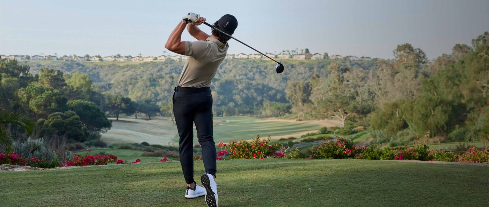
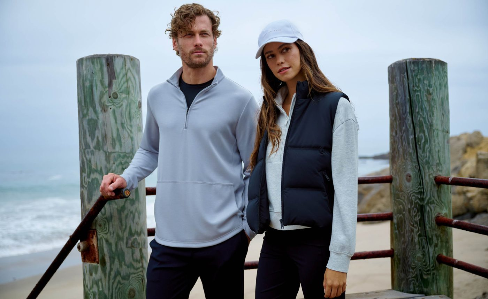
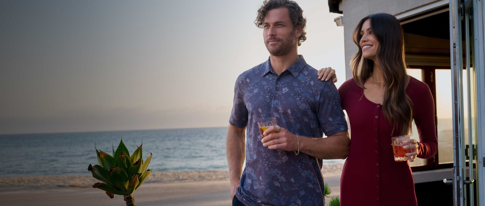
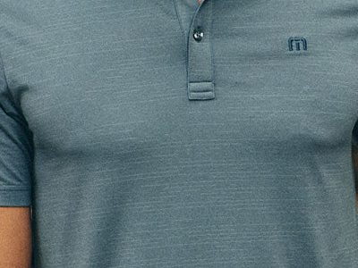
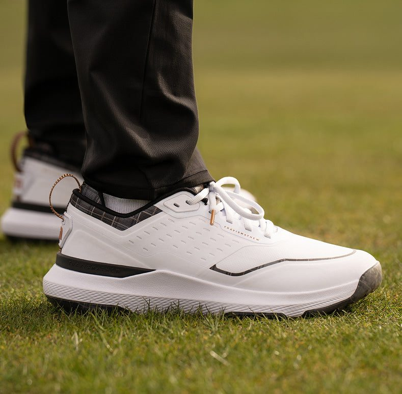
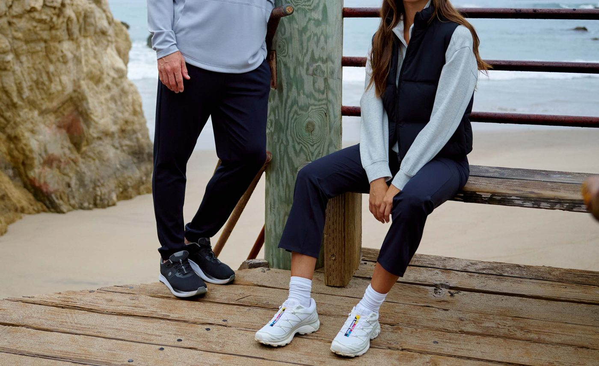

Visual study · mood board · brand series 01 · 2026-11-16
TravisMathew
Visual study (mood board) of TravisMathew, a Southern California golf and lifestyle apparel brand: design and style from its website and campaign images.
Mood
Golden-hour coast and manicured course: easy, social, well dressed. Deep forest green and sky blue anchor a sunlit palette, with sand and slate for the clothes. Positioning is premium-casual golf lifestyle, polished enough for dinner, technical enough for the round.


(01)

(02)

(03)

(04)

(05)(06)


(07)Palette, measured from the images
#162B23#CDD9E7#121110#9B815F#697476#474C37Visual themes
01 Course and coast. Key motifs: fairway at low sun, seaside terrace, pier posts. Sub motifs: sea haze, palm, rock, boardwalk.
02 Social leisure. Key motifs: couples and friends in relaxed poses, a bar or dinner setting. Sub motifs: warm interior light, glassware.
03 Clean product. Key motifs: shoes on turf, pants and sneakers at ground level. Sub motifs: white and navy against green.
04 Heritage graphic. Key motifs: collegiate lettering on a dark green leaf, serif italic category tiles. Sub motifs: bold varsity caps; small monogram logo.
Hero material
Fact. The Heater polo is a 70% recycled polyester, 23% cotton, 7% spandex performance knit with 4-way stretch, a heathered micro-stripe look and a double-needle collar (https://www.travismathew.com/tm/tops/polos/the-heater-polo/p/1MW395_4VIL_, retrieved 2026-11-16).
Interpretation. The look is a soft, matte, slightly heathered jersey that reads as cotton and performs like polyester; it sits between a golf shirt and a casual knit. Close-up at (04).
Visual elements
Photography. Warm backlight and dusk color, medium-wide framing, models in motion or leaning, shallow depth; golf in landscape.
Type and graphics. High-contrast serif italic for category tiles (observed); condensed varsity caps for collegiate; a small lowercase-m monogram.
Layout habits. Wide banner, then square tiles; 2 × 2 grids for outerwear and pants; one short line of copy.
Detail. Collar structure, tonal buttons, clean white soles; no visible logo scale on garments.
Visual story
Fact (home page, https://travismathew.com/, retrieved 2026-11-16): seasonal banner (new arrivals), golf banner, outerwear and pants 2 × 2 tiles, category square tiles (men's, women's, polos, footwear), collegiate collection, then the brand page. The brand page opens with 'Made to meet the moment': versatility, from course to dinner (https://travismathew.com/pages/about-us).
Interpretation: lifestyle first (where you wear it), product category second.
Notable products
Heater polo. The core fabric and collar idea.
Golf shoes (Modern Tour, Daily Pro). Clean white sole units carry the look to the ground.
Collegiate collection. Shows the heritage graphic side of the brand.
What we can learn
Pair one deep green with a sky blue and keep clothes in sand and slate; shoot at golden hour so a plain polo looks premium. A serif italic tile against sans-serif product copy gives an easy luxury cue. Worth a deeper look later (not started): the knit structure and heather effect of the polo fabric; collar fusing and stay construction. A material specialist and reverse engineering are candidates only.
Method and limits
Palette basis. board images (01) to (04), (06) and (07) plus two polo product images from the polos collection page; six clusters kept after dropping near-duplicates
Limits. Home page read once on 2026-11-16; seasonal banners change. The close-up is a crop of a 1260 px product image and is soft. Item names of some tiles were read from file names, which can be wrong. Candidates for a later deeper look only: the Heater 4-way stretch recycled polyester blend, double-needle collar construction.
Image credits
- (01) Golfer mid-swing on a fairway at dusk, homepage golf banner. source (file FH26_11_2_HP_Golf_Desktop.jpg)
- (02) Couple in quarter-zip, vest and cap on a pier, outerwear tile. source (file FH26_11_2_Outerwear_2X2)
- (03) Couple at a seaside terrace at sunset, new arrivals banner. source (file FH26_11_2_D5_New_Arrivals_Desktop.jpg)
- (04) Close-up crop of a blue-gray polo chest, cropped from the Heater polo collection image (low resolution). source (file FH26_M_Polos_PLP_The_Heater_Vis_Nav.jpg)
- (05) White golf shoe on turf, St Andrews Nuage tile. source (file SS26_M_St_Andrews_Nuage_Tartan_Thumbnail.jpg)
- (06) Shop Men's Polos tile: dark green field with serif italic type. source (file Shop_Mens_Polos_Square.jpg)
- (07) Pants and sneakers seated on a boardwalk, pants tile. source (file FH26_11_2_Pants_2X2)
Images are the brand's own, shown for study and reference only; each is listed above with its source page.